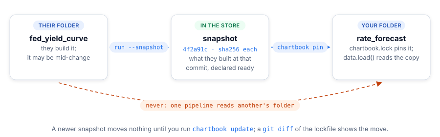
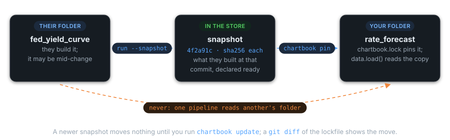

Depending on Another Pipeline#
A pipeline often builds on data another pipeline made. ChartBook lets it do that without reading the other pipeline’s folder: the other pipeline’s owner declares a build ready, and you pin that build and read it by name.
# chartbook.toml
[dependencies]
"ftsfr/fed_yield_curve" = {}
$ chartbook pin # pin its newest snapshot; writes chartbook.lock
$ git add chartbook.lock
from chartbook import data
rates = data.load("fed_yield_curve:treasury_rates") # the pinned copy, read from the store


Three words carry the arrangement, and Vocabulary defines them. A snapshot records
what one pipeline made: every asset it built at one commit, with its content hash, kept in the
store (a folder of yours, or one a team shares). A pin freezes which snapshot of a
dependency you read, and the lockfile, chartbook.lock, records the pins. The lockfile is
committed and has no timestamp on purpose: a git diff of it means “a pin moved” and nothing else.
On the catalog’s page of what you built, the pin is named: what it was made from, as pinned, the snapshot and the hash of the bytes it read. Here, the tutorial’s model, trained on another pipeline’s yield curve (Explore a Catalog downloads it):


Declare it#
Name the other pipeline by its ID; chartbook add ftsfr/fed_yield_curve writes the line and pins it. Its
snapshots are found in the store by that ID, so nothing of the other repository has to be on your
disk. When the two pipelines are in one repository, name the other by its folder instead:
[dependencies]
"ftsfr/fed_yield_curve" = { path = "../fed_yield_curve" }
chartbook check warns while a dependency is declared and not pinned. Dependencies form a directed
acyclic graph: every command that would pin or build a cycle refuses and says who depends on whom.
They declare a build ready#
In the other pipeline’s folder, with everything committed:
$ chartbook run --snapshot # build it, and copy what it built into the store, labelled with the commit
That is a snapshot, and it is what of theirs you read. Their folder is never read.
You pin it, read it, and update when you choose#
$ chartbook pin # once, to start depending on it
$ chartbook update # later, when you want their newer snapshot; the lockfile diff shows the move
rates = data.load("fed_yield_curve:treasury_rates") # a frame
path = data.path("fed_yield_curve:treasury_rates") # the parquet file in the store, for a reader of your own
files = data.files("news_headlines:articles") # a folder of files: every file, wherever the store keeps it
What you get is the build they declared ready, not whatever is in their _data/ folder this
minute. A dataset of many files has files and no one path; Reading and Writing Data says why,
and how data.load, data.sql and data.files read it.
Who |
Does |
When |
|---|---|---|
The other pipeline’s owner |
|
When a build is ready for others |
You |
|
To start depending on it |
You |
|
When you want their newer snapshot |
Reading before you pin#
In a notebook, a read does what you most likely meant and says what it did. In a build under
chartbook run, only a pin is read, since nothing else would be recorded.
What you read |
In a notebook |
In a build under |
|---|---|---|
A dependency that is pinned |
The pinned copy |
The pinned copy |
A dependency declared and not pinned |
Pins its newest snapshot now, and says so |
|
A pipeline not in |
Its newest snapshot, with a warning that nothing records it |
An error |
One with no snapshot, whose folder is here |
An error naming |
The same error |
>>> data.load("acme/rates:treasury")
acme/rates: pinned to its newest snapshot, 3f2a9c1, made 2026-10-16 22:06 UTC (chartbook.lock). `chartbook update acme/rates` moves it.
To work on both pipelines at once, chartbook link acme/rates ../rates makes reads follow that
working folder, with a warning; delete chartbook.links.toml to go back.
Building your pipeline#
[scripts]
build = "doit"
$ chartbook run # pins what has no pin yet, then runs the build script
chartbook run never builds in a path dependency’s folder and never reads it: its owner makes the
snapshot. When the folder is yours, chartbook run --upstream builds and snapshots one that has no
snapshot yet. It never moves a pin; chartbook update does that. A dependency can also be a git
repository, { git = "https://…", rev = "v1.2" }: chartbook pin pins the files it commits, and
chartbook run builds the rest once, in ChartBook’s own clean copy of that commit.
What a snapshot is in the store#
Every snapshot is a complete version: its record lists every file of every asset and says which
folder keeps each. The store keeps each file once, so a snapshot’s folder may hold only what is
new or changed. chartbook store ls calls a folder that holds every file standalone and one that
holds only what changed shared:
$ chartbook store ls acme/news_headlines
acme/news_headlines (2 snapshot(s))
2026-05-01T120000Z_a1b2c3d4e5f6 2026-05-01 12:00 UTC a1b2c3d standalone 2.1 GB here
2026-06-01T120000Z_e5f6a7b8c9d0 2026-06-01 12:00 UTC e5f6a7b shared 310 MB here, 14 file(s) in other folders
That is what keeps a growing dataset from costing its whole size again on every snapshot. It also
means a snapshot’s folder is never deleted by hand: another snapshot may keep files in it.
chartbook store gc removes snapshots safely, and after a snapshot or a catalog build one line says
what it would clear. Catalogs and Stores has the store side of this.
Models have versions#
A model’s bytes become a version when a snapshot first holds them, named by the start of their
hash. [models.x.aliases] gives a version a label such as champion, and another pipeline reads it
as fed_yield_curve:model/x@champion; chartbook update moves the pin when the label does.
Every asset page shows a provenance panel: what the asset was made from, at which hashes, and for a model whether its training data has moved since. [dependencies] in the reference has every field, including a dependency fetched from a published store on a machine that never built it.